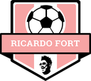
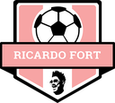

AHA BIG - Asociación de HaxBall Argentina Big
🏆 Temporada 21 / 📢│t21-copas-anuncios

 Pearl Jam (1ºA)
•  Ricardo Fort (1ºB)
•
Pearl Jam (1ºA)
•  Ricardo Fort (1ºB)
•  Atlético Mineiro (1ºC)
• Haxbol Team (2ºA)
•
Atlético Mineiro (1ºC)
• Haxbol Team (2ºA)
•  Natus Vincere (2ºB)
•
Natus Vincere (2ºB)
•  Cool Gamers (3ºA)
•
Cool Gamers (3ºA)
•  Juego Bonito Argentina (Campeón Copa AHA)
•
Juego Bonito Argentina (Campeón Copa AHA)
•  Estudiantes (2ºC)
Copa AHA
•
Estudiantes (2ºC)
Copa AHA
•  Junín (3ºB)
•
Junín (3ºB)
•  Toco y Paso (3ºC)
•
Toco y Paso (3ºC)
•  Racing (4ºA)
•
Racing (4ºA)
•  Titanes del Haxball (4ºB)
•
Titanes del Haxball (4ºB)
•  New Galaxy (4ºC)
•
New Galaxy (4ºC)
•  Históricos (5ºB)
•
Históricos (5ºB)
•  Leeds United (5ºC)
•
Leeds United (5ºC)
•  Vikings Big (6ºA)
•
Vikings Big (6ºA)
•  Deportivo Haxball (6ºB)
•
Deportivo Haxball (6ºB)
•  tuRiver (6ºC) (edited)
tuRiver (6ºC) (edited)